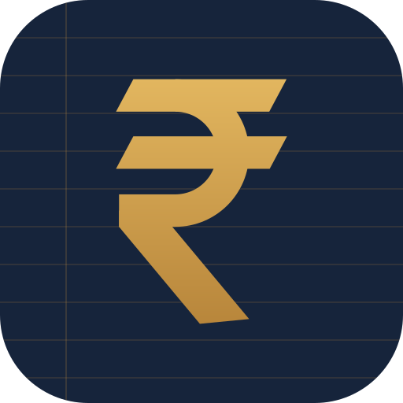

Can’t reach the server
The app could not load your Personal Expense Tracker server. Check that:
- the Flask server is running (
python app.py) - the phone is on the same Wi-Fi as the computer
- the address in
mobile/capacitor.config.jsonis correct, then runnpx cap sync androidand rebuild - Windows Firewall allows Python on private networks
Payments captured from SMS and UPI notifications are saved on the phone and uploaded automatically once the server is reachable again. Close and reopen the app to retry.